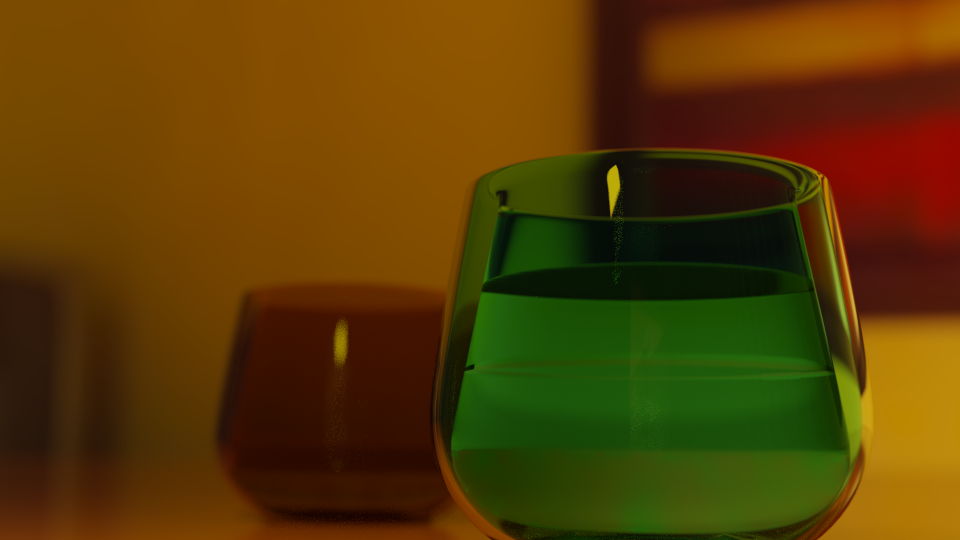
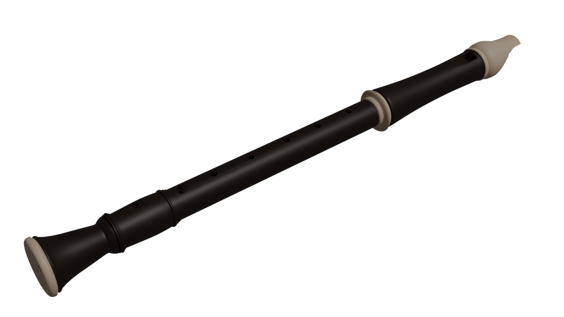
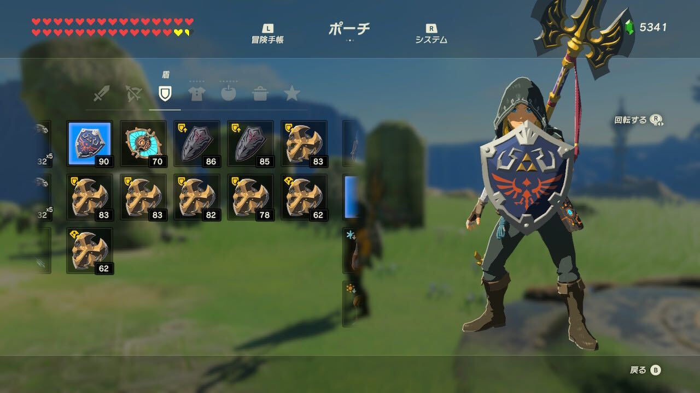

Blender
初挑戦！
初めてBlenderを触ってみました。チュートリアル動画とにらめっこしながら、動画時間の倍くらい時間を掛けて作りました。すっごい3D酔いしながら、ショートカットキーを覚えながらようやく画像を書き出してめっちゃ感動しました。
|  | |
|
参考にさせて頂いた動画。 |
ML/chさんのチャンネルへ |
自力で制作(｀・ω・´)ｷﾘｯ
初挑戦がそこそこ上手くいったので、自力で作ったろうと。家から学校にリコーダー持ち込んで、どうにか形になったソプラノリコーダー。
|  | リコーダーの3Dモデルビューワーを埋めこむ |
| なんか薄暗い……。上手くいかなかった(´・ω・｀) |
厨二病万歳！
ゼルダの伝説・ブレスオブザワイルドよりハイリアの盾を作りました。王家の紋章って……カッコいいですよね（）
|  | ハイリアの盾の3Dモデルビューワーを埋めこむ |
| 参考画像（ゼルダの伝説・ブレスオブザワイルドより） |
キャラクターモデリング初挑戦！
デザイン研究室というチャンネルでネットコースの方が投稿されていた青磁なぎさちゃんの3Dモデルを作りました。
 |
なぎさの3Dモデルビューワーを埋めこむ |
| 参考にさせて頂いた動画。 【Blender 2.9 Tutorial】キャラクターモデリング解説 #1 |